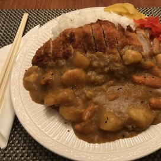

Izuku Midoriya's Japanese Katsu Curry

Description
This is an anime-inspired recipe from our local hero-in-training
Izuku Midoriya (My Hero Academia), who's favorite food is a
pork cutlet bowl. However, instead of pork, it will be
with chicken.
Ingredients
Servings: 2-4
Chicken Katsu
- 1 lb chicken breast/thighs
- 1/2 cup flour
- 2 eggs
- 1 teaspoon of salt
- 1/2 teaspoon of pepper
Curry
- 3 cups of water
- 1 cup of chicken stock
- 1 small onion, diced
- 2-3 small potatoes, cubed
- 3-4 carrots, chopped